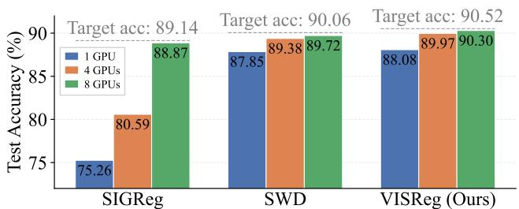

Figureure 2 · Embedding collapse preventionFigure 2. Embedding collapse prevention. We simulate the gradient $| | \nabla L | |$ of popular regularization methods under different collapse stages by changing the feature norm (r). We observe that when the model is collapsed, Barlow Twins (Zbontar et al., 2021) and VISReg provide a strong gradient to fix the collapse, whereas SIGReg (Balestriero & LeCun, 2025) fails to do so.这张图来自论文 PDF 的结构化抽取。当前用于辅助理解 VISReg 的方法或实验，请结合正文精读段落一起看。

Figureure 6 · Linear probe accuracy in scaling the number of GPUs with the fixed K aFigure 6. Linear probe accuracy in scaling the number of GPUs with the fixed K and D. This result indicates that scaling the number of GPUs can compensate for the insufficient $K { = } \textstyle { \frac { 1 } { 4 } } { \bar { D } }$ to a sufficient level. When using 8x more GPUs, the final accuracy matches the target accuracy of K=2D, which makes K a constant number possible when scaling the training.这张图/表用于判断 VISReg 的实验收益来自哪里。重点看替换、消融或跨模型设置下趋势是否一致，而不是只看单个最高分。